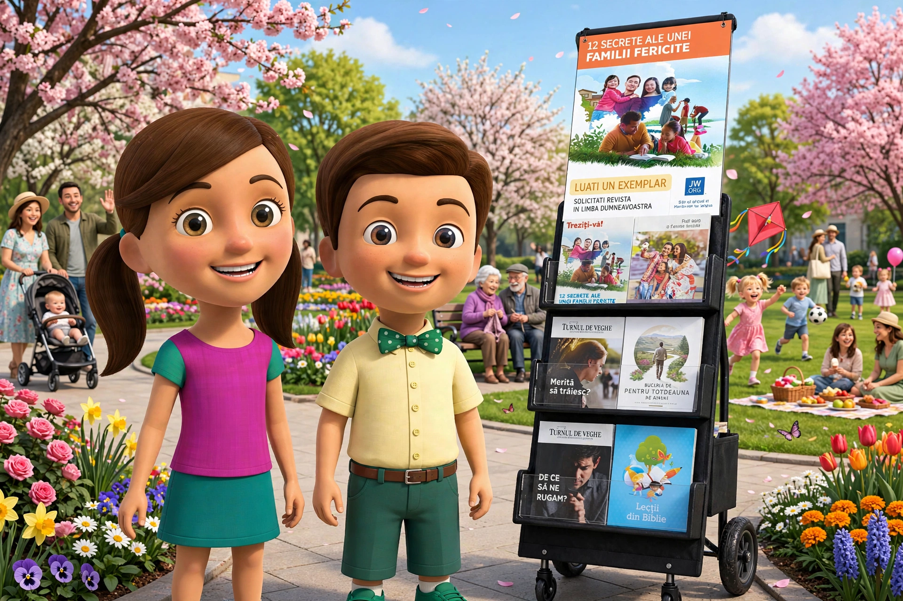

Bună ziua! 🌿
Apasă pentru a adăuga textul anului...
Articole Studiate
0
Notițe Salvate
0
Întruniri Pregătite
0
Versete Marcate
0
Următoarea Întrunire
ProgramatNotițe Recente
Vezi toate✨ Versetul Zilei
„El va șterge orice lacrimă din ochii lor și moartea nu va mai fi. Nici jale, nici strigăt, nici durere nu vor mai fi.”
— Revelația 21:4
Studiu Rapid
ActivÎntrunirea Publică și Studiul Turnului de Veghe
Turnul de Veghe – Studiu Temă pentru cursant Viața creștină și predicarea Întrunirea de ieșire pe teren Studiu Biblic Personal Deschide jw.org/roTurnul de Veghe – Studiu
Introduceți răspunsurile și notițele pentru articolul de studiu săptămânal
Paragrafe & Răspunsuri
📝 Sinteză Personală
AI Assist📢 Cuvântare Publică – 30 minute
Întrunirea Publică și Studiul Turnului de Veghe
📚 Cuvântări Salvate
Apasă pe o cuvântare pentru a o încărca și edita.
📝 Temă pentru cursant
Notează-ți datele pentru tema de la întrunirea „Viața creștină și predicarea", salvează-le și generează fișa de printat.
✏️ Temă nouă
📅 Calendar
📋 Teme salvate
📋 Viața creștină și predicarea
Pregătire pentru întrunirea de mijlocul săptămânii
🎵 Cântare & Rugăciune de Deschidere
📖 Comori din Cuvântul lui Dumnezeu
🌾 Să fim mai eficienți în Predicare
🎤 Cuvântare
Cuvântarea de 5 minute are acum pagina ei proprie, cu timer și notițe pe tot ecranul.
❤️ VIAȚA DE CREȘTIN
Să umblăm cu Dumnezeu plini de curaj
🎤 Cuvântare – 5 minute
Pregătirea și cronometrul pentru cuvântarea de 5 minute din cadrul Vieții creștine
🎤 Cuvântare
✨ Asistent AI📚 Cuvântări Salvate
Apasă pe o cuvântare pentru a o încărca și edita.
🎬 Bibliotecă
Publicații și materiale video
Publicații din jw.org — adaugă linkuri sau fișiere PDF descărcate.
Nicio publicație adăugată încă.
✏️ Studiu Biblic Personal
Versete, pasaje și meditații personale
Adaugă Verset / Pasaj
Versetele Mele Salvate
Niciun verset salvat încă.
Adaugă primul tău verset de mai sus.
📜 Profeții și Împlinirea lor
| 📖 Profeția | 📅 Anul | ✅ Împlinirea | 🔗 Referință | ⚙️ |
|---|
Serviciul de ieșire pe teren
Notițe și idei pentru lucrarea de predicare
Adaugă Notiță Serviciu de ieșire pe Teren
Notițe Serviciu de Teren Salvate
Nicio notiță de serviciu de teren salvată.
Programare de ieșire pe teren
Tabel pentru programarea ieșirilor pe teren
Imagine
Programările mele
Fiecare vestitor își programează aici ieșirile. Dacă alegi un coleg cu care ai mai fost programat, apare un avertisment — ca să nu vă programați din nou împreună data viitoare.
| Calendar | Ziua | Luna | Anul | Ora | Nume vestitor | Nume vestitor colaborator |
|---|
Programare de ieșire cu standul
Tabel pentru programarea ieșirilor cu standul
Imagine

Programările mele
Fiecare vestitor își programează aici ieșirile cu standul. Dacă alegi un coleg cu care ai mai fost programat, apare un avertisment — ca să nu vă programați din nou împreună data viitoare.
| Calendar | Ziua | Luna | Anul | Ora | Nume vestitor | Nume vestitor colaborator | Nume vestitor colaborator 2 |
|---|
Apasă pe ☰, de lângă titlul paginii, pentru a merge la secțiunea Vestitor.
Cum se folosește secțiunea Vestitor:
- 🗓️ Raport lunar — alegi luna și anul, treci orele și minutele făcute în predicare, adaugi opțional o observație și apeși 💾 Salvează. Raportul apare imediat în lista de mai jos, în „Istoric rapoarte". Butonul 🗑️ Șterge de lângă Salvează golește doar formularul (ore, minute, observații) — nu șterge rapoarte deja salvate. Pentru a șterge un raport din istoric, apeși pe 🗑️ din dreptul lui.
- 📤 Trimite raport pe WhatsApp — completezi numele, luna și anul. Dacă ești vestitor simplu (fără statut de auxiliar/regulat bifat în profil), apare un câmp „Participare” cu Da/Nu. Dacă ești auxiliar 15/30 ore sau regulat, apare un câmp cu orele — precompletat automat din raportul deja salvat pentru luna aleasă (sau din ținta statutului tău, dacă nu ai încă un raport), dar poți modifica orele oricând înainte de a trimite.
- 🔔 Reamintire raport lunar — dacă ai numele scris în profil și notificările locale activate din Setări, primești reamintiri repetate, pe toată durata zilei, în prima și a doua zi a lunii — până apeși ✅ Raport trimis. Exportul în calendar (.ics) rămâne disponibil ca opțiune secundară, pentru cine preferă calendarul telefonului.
- 👤 Profilul Vestitorului — bifezi statutul tău (auxiliar 15 ore, auxiliar 30 ore sau regulat) și colorezi lunile în care ești activ, pornind din Septembrie. Doar lunile colorate contează la calculul țintei anuale.
- 📅 Raportul Anual Teocratic — se calculează automat, folosind orele deja introduse la „Raport lunar" și lunile colorate din profil. Arată ore realizate, ținta anuală și cât mai ai de făcut. Navighezi între ani teocratici cu săgețile ◀ ▶.
Toate datele se salvează automat, direct pe acest dispozitiv.
Numele tău, cronometrul de predicare și rapoartele lunare — totul salvat automat.
📋 Vestitor
📚 Rapoarte salvate
| Luna | Anul | Ore | Minute | Observații |
|---|
📄 Notițele Mele
Nicio notiță salvată.
Selectează o notiță sau
apasă + Notiță Nouă
📅 Programul Meu de Întruniri
Planifică și urmărește pregătirea pentru fiecare întrunire
Întrunire de Weekend
- 🎵 Cântare & Rugăciune
- 📢 Discurs public (30 min)
- Studierea Turnului de Veghe (60 min)
- 🎵 Cântare & Rugăciune de Încheiere
Întrunire de Mijlocul Săptămânii
- 🎵 Cântare & Rugăciune
- 💎 Comori din Cuvântul lui Dumnezeu
- 🌾 Să fim mai eficienți în Predicare
- ❤️ VIAȚA DE CREȘTIN
- 🎵 Cântare & Rugăciune de Încheiere